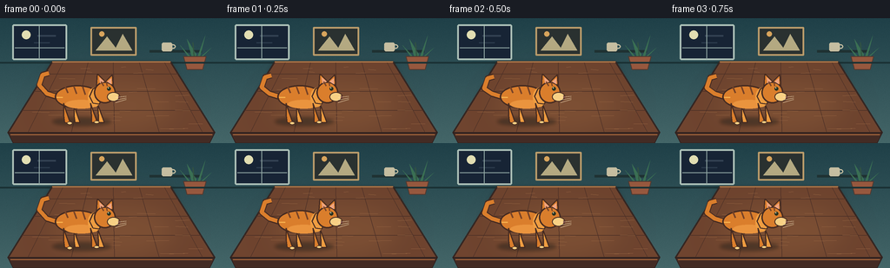
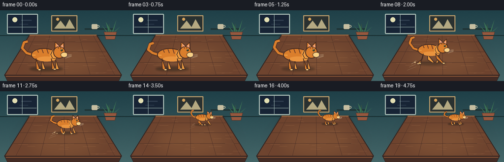

CODING AGENTS AS PIXEL WORLD MODELS
traex/GPT-5.6-Sol · dynamic_spatial_relationship_0013
点击播放 · 原生 RGB 像素
逐轮保存的候选
回放视频、检查图与代码变化。
每份候选均可单独播放。实际图片检查记录在下方工具轨迹中。
候选 01播放与检查图
点击播放 · 原生 RGB 像素


展开代码变化
--- 上一保存版本
+++ 本次保存版本
@@ -0,0 +1,201 @@
+from pathlib import Path
+import math
+import numpy as np
+from PIL import Image, ImageDraw, ImageFilter
+import artifact_io
+
+W, H, N, SS = 256, 144, 20, 3
+RNG = np.random.default_rng(13)
+
+def Q(v): return int(round(v * SS))
+def pts(seq): return [(Q(x), Q(y)) for x, y in seq]
+
+def ellipse(draw, box, fill, outline=None, width=1):
+ draw.ellipse(tuple(Q(v) for v in box), fill=fill, outline=outline, width=max(1,Q(width)))
+
+def line(draw, seq, fill, width=1, joint='curve'):
+ draw.line(pts(seq), fill=fill, width=max(1,Q(width)), joint=joint)
+
+def polygon(draw, seq, fill, outline=None, width=1):
+ draw.polygon(pts(seq), fill=fill)
+ if outline:
+ draw.line(pts(list(seq)+[seq[0]]), fill=outline, width=max(1,Q(width)), joint='curve')
+
+def make_background():
+ # Calm, cool room with a warm wooden table; gradients keep the small scene dimensional.
+ yy = np.linspace(0, 1, H*SS)[:,None,None]
+ top = np.array([31,64,72], dtype=float)[None,None,:]
+ bot = np.array([68,102,104], dtype=float)[None,None,:]
+ arr = np.tile(top*(1-yy)+bot*yy, (1,W*SS,1))
+ # subtle plaster noise
+ noise = RNG.normal(0, 1.5, (H*SS,W*SS,1))
+ arr = np.clip(arr+noise,0,255).astype(np.uint8)
+ im = Image.fromarray(arr,'RGB')
+ d = ImageDraw.Draw(im)
+ # window and night sky
+ d.rounded_rectangle((Q(14),Q(7),Q(77),Q(48)), radius=Q(2), fill=(23,36,53), outline=(173,193,184), width=Q(2))
+ # hazy moon and clouds
+ ellipse(d,(25,14,35,24),(226,222,178))
+ line(d,[(43,20),(64,20)],(50,65,82),2)
+ line(d,[(39,28),(57,28)],(44,59,76),1.4)
+ line(d,[(17,34),(74,34)],(145,167,164),1)
+ line(d,[(45,9),(45,47)],(145,167,164),1)
+ # framed minimalist picture
+ d.rounded_rectangle((Q(104),Q(10),Q(157),Q(43)), radius=Q(1), fill=(42,49,48), outline=(188,157,107), width=Q(2))
+ polygon(d,[(110,37),(123,21),(133,34),(141,18),(152,37)],(181,170,130))
+ ellipse(d,(114,15,120,21),(216,164,92))
+ # narrow shelf and a cup
+ line(d,[(172,38),(232,38)],(31,49,50),3)
+ d.rounded_rectangle((Q(186),Q(28),Q(198),Q(38)), radius=Q(2), fill=(198,190,161))
+ ellipse(d,(196,30,202,35),None,(198,190,161),1.5)
+ # plant behind the table at right
+ for p in [[(222,50),(215,24),(226,42)],[(225,50),(236,20),(230,44)],[(220,49),(207,31),(218,43)],[(228,49),(243,34),(231,44)]]:
+ polygon(d,p,(58,111,83))
+ line(d,[(224,51),(222,28)],(50,83,65),1.2)
+ polygon(d,[(211,44),(237,44),(233,59),(215,59)],(151,88,62),outline=(82,57,47),width=1)
+ # wall/table separator and a soft rear cast shadow
+ line(d,[(0,51),(256,51)],(26,49,52),2)
+ sh = Image.new('RGBA',im.size,(0,0,0,0)); sd=ImageDraw.Draw(sh)
+ polygon(sd,[(59,51),(197,51),(236,129),(17,129)],(0,0,0,54))
+ sh=sh.filter(ImageFilter.GaussianBlur(Q(3))); im=Image.alpha_composite(im.convert('RGBA'),sh).convert('RGB'); d=ImageDraw.Draw(im)
+ # tabletop in strong perspective
+ polygon(d,[(60,50),(196,50),(247,132),(9,132)],(111,68,47),outline=(52,38,34),width=1.6)
+ # warm central light patch
+ glow=Image.new('RGBA',im.size,(0,0,0,0)); gd=ImageDraw.Draw(glow)
+ ellipse(gd,(44,59,218,143),(236,173,92,28))
+ glow=glow.filter(ImageFilter.GaussianBlur(Q(18))); im=Image.alpha_composite(im.convert('RGBA'),glow); d=ImageDraw.Draw(im)
+ # perspective wood planks and grain
+ for bx in [72,101,130,160,189]:
+ fx = 128 + (bx-128)*1.72
+ line(d,[(bx,51),(fx,132)],(78,49,39,190),0.65)
+ for y in [64,84,106]:
+ t=(y-50)/82
+ xl=60+(9-60)*t; xr=196+(247-196)*t
+ line(d,[(xl,y),(xr,y)],(76,48,38,120),0.55)
+ # deterministic fine wood grain
+ for i in range(24):
+ y=float(RNG.uniform(55,128)); t=(y-50)/82
+ xl=60+(9-60)*t; xr=196+(247-196)*t
+ x=float(RNG.uniform(xl+4,xr-16)); length=float(RNG.uniform(8,29)*(0.55+0.6*t))
+ line(d,[(x,y),(min(x+length,xr-3),y+RNG.uniform(-.6,.6))],(151,101,66,95),0.45)
+ # crisp back lip and front apron
+ line(d,[(60,50),(196,50)],(184,127,77),1.3)
+ polygon(d,[(9,132),(247,132),(241,144),(15,144)],(67,43,36),outline=(43,30,29),width=1)
+ line(d,[(12,134),(244,134)],(157,97,58),1.2)
+ return im.convert('RGB')
+
+BG = make_background()
+
+def draw_speed_marks(im, x, y, s, progress, frame):
+ if frame < 6 or frame > 14: return
+ ov=Image.new('RGBA',im.size,(0,0,0,0)); d=ImageDraw.Draw(ov)
+ alpha=int(100*(math.sin(math.pi*min(1,max(0,progress)))**0.5))
+ for j in range(3):
+ yy=y + (j-1)*7*s
+ length=(11+5*j)*s
+ line(d,[(x-34*s-length,yy+8*s),(x-34*s,yy)],(225,205,163,alpha//(j+1)+20),1.05)
+ im.alpha_composite(ov)
+
+def cat_shadow(im,x,y,s,running):
+ ov=Image.new('RGBA',im.size,(0,0,0,0)); d=ImageDraw.Draw(ov)
+ ellipse(d,(x-34*s,y-6*s,x+34*s,y+4*s),(18,24,23,105 if not running else 82))
+ ov=ov.filter(ImageFilter.GaussianBlur(max(1,Q(2.1*s))))
+ im.alpha_composite(ov)
+
+def draw_cat(im, x, y, s, frame, running=False, crouch=0.0):
+ d=ImageDraw.Draw(im)
+ outline=(70,43,33,255); fur=(218,126,44,255); fur2=(238,157,65,255); cream=(248,208,132,255); stripe=(118,66,39,255)
+ def T(a,b): return (x+a*s,y+b*s)
+ def P(seq): return [T(a,b) for a,b in seq]
+ bob=0
+ if running:
+ phase=(frame-5)*1.52
+ bob=-1.8*abs(math.sin(phase))*s
+ else: phase=0
+ y += bob
+ # tail behind body: a lively cubic-like swept curve
+ sway=math.sin(frame*.72)*4
+ tail=[T(-27,-29),T(-40,-33),T(-49,-43+sway),T(-45,-55+sway),T(-38,-57+sway)]
+ line(d,tail,outline,7.0*s); line(d,tail,fur,4.5*s)
+ # running gait, with paired legs stretching in opposite directions
+ if running:
+ a=math.sin(phase); b=-a
+ hind=[(-18,-21),(-20,-9),(-19+12*a,0),(-13+12*a,1)]
+ hind2=[(-8,-20),(-8,-8),(-8-10*a,-1),(-2-10*a,0)]
+ front=[(10,-22),(12,-10),(13+11*b,0),(19+11*b,1)]
+ front2=[(18,-23),(19,-11),(19-9*b,-1),(25-9*b,0)]
+ else:
+ hind=[(-21,-22),(-21,-8),(-20,0),(-13,1)]
+ hind2=[(-9,-20),(-9,-7),(-8,0),(-2,0)]
+ front=[(10,-22),(11,-7),(11,0),(18,0)]
+ front2=[(18,-22),(19,-7),(19,0),(26,0)]
+ # far pair first
+ for leg in [hind2,front2]: polygon(d,P(leg),fur2,outline,1.5*s)
+ # body; crouches in anticipation on frame 4
+ top=-43+6*crouch; bot=-16+2*crouch
+ ellipse(d,(x-31*s,y+top*s,x+21*s,y+bot*s),fur,outline,1.8*s)
+ # warm underbelly and shoulder modelling
+ ellipse(d,(x-19*s,y+(-26+2*crouch)*s,x+18*s,y+(-16+2*crouch)*s),(234,148,62,255))
+ ellipse(d,(x+7*s,y+(-40+5*crouch)*s,x+22*s,y+(-18+2*crouch)*s),fur2)
+ # near legs
+ for leg in [hind,front]: polygon(d,P(leg),fur,outline,1.5*s)
+ # pale paws
+ for leg in [hind,front]:
+ px,py=leg[-1]; ellipse(d,(x+(px-4)*s,y+(py-2)*s,x+(px+2)*s,y+(py+1.5)*s),cream,outline,.7*s)
+ # neck ruff
+ polygon(d,P([(13,-39),(21,-42),(25,-32),(20,-21),(13,-22),(9,-30)]),fur2,outline,1.2*s)
+ # head and ears in unmistakable side profile
+ polygon(d,P([(17,-42),(18,-56),(27,-47),(35,-55),(36,-40)]),fur,outline,1.5*s)
+ ellipse(d,(x+14*s,y-47*s,x+39*s,y-22*s),fur,outline,1.7*s)
+ # muzzle extends to the right
+ ellipse(d,(x+29*s,y-35*s,x+44*s,y-24*s),cream,outline,1.0*s)
+ # inner ears
+ polygon(d,P([(20,-52),(21,-45),(26,-47)]),(239,164,128,255))
+ polygon(d,P([(34,-51),(34,-44),(29,-47)]),(239,164,128,255))
+ # eye, catchlight, nose, smile
+ ellipse(d,(x+29.1*s,y-41*s,x+33.2*s,y-36.7*s),(40,51,35,255))
+ ellipse(d,(x+30*s,y-40.3*s,x+31*s,y-39.3*s),(255,247,210,255))
+ polygon(d,P([(42,-31),(45,-29),(42,-27)]),(104,54,48,255))
+ line(d,[T(42,-27),T(39,-25)],outline,max(.65,.8*s))
+ # whiskers
+ for off in [-2,1,4]:
+ line(d,[T(39,-27+off),T(51,-29+off*.6)],(245,226,188,220),max(.45,.6*s))
+ # tabby stripes and fur highlights
+ for xx,ang in [(-19,0),(-9,1),(1,2)]:
+ line(d,[T(xx,-41),T(xx+3,-34+ang)],stripe,max(.8,1.7*s))
+ line(d,[T(22,-47),T(25,-42)],stripe,max(.7,1.4*s))
+ line(d,[T(28,-47),T(29,-42)],stripe,max(.7,1.3*s))
+ line(d,[T(-29,-29),T(-22,-29)],(247,177,77,180),max(.7,1.2*s))
+
+
+def position(frame):
+ if frame <= 3:
+ return 0.0, 94.0, 120.0, 1.0, False, 0.0
+ if frame == 4:
+ return 0.0, 94.0, 120.0, 1.0, False, 1.0
+ if frame >= 16:
+ return 1.0, 158.0, 67.0, 0.48, False, 0.0
+ u=(frame-5)/10.0
+ # Smooth acceleration and braking, but enough displacement on every running frame.
+ p=u*u*(3-2*u)
+ x=94+(158-94)*p
+ y=120+(67-120)*p
+ s=1+(0.48-1)*p
+ return p,x,y,s,True,0.0
+
+def render(frame):
+ im=BG.convert('RGBA')
+ p,x,y,s,running,crouch=position(frame)
+ draw_speed_marks(im,x,y,s,p,frame)
+ cat_shadow(im,x,y,s,running)
+ draw_cat(im,x,y,s,frame,running,crouch)
+ # tiny contact flecks emphasize departure without obscuring the scene
+ if 6 <= frame <= 11:
+ d=ImageDraw.Draw(im)
+ for j in range(2):
+ xx=x-(30+7*j)*s; yy=y-(j*3)*s
+ ellipse(d,(xx-1.5*s,yy-1.2*s,xx+1.5*s,yy+1.2*s),(225,190,135,150))
+ return np.asarray(im.convert('RGB').resize((W,H),Image.Resampling.LANCZOS),dtype=np.uint8)
+
+frames=np.stack([render(i) for i in range(N)],axis=0)
+artifact_io.save(frames,Path(__file__).resolve().parent)
可观测工具轨迹
实际执行的命令与返回图片。
命令 1exit 0
/bin/bash -lc "cat prompt.txt && printf '\\n---RULES---\\n' && cat GENERATION_RULES.md && printf '\\n---SPEC---\\n' && cat task_spec.json"
命令 2exit 0
/bin/bash -lc "find . -maxdepth 2 -type f -printf '%p\\n' | sort"
命令 3exit 0
/bin/bash -lc 'cat artifact_io.py'
命令 4exit 0
/bin/bash -lc "cat > generate.py <<'PY'
from pathlib import Path
import math
import numpy as np
from PIL import Image, ImageDraw, ImageFilter
import artifact_io
W, H, N, SS = 256, 144, 20, 3
RNG = np.random.default_rng(13)
def Q(v): return int(round(v * SS))
def pts(seq): return [(Q(x), Q(y)) for x, y in seq]
def ellipse(draw, box, fill, outline=None, width=1):
draw.ellipse(tuple(Q(v) for v in box), fill=fill, outline=outline, width=max(1,Q(width)))
def line(draw, seq, fill, width=1, joint='curve'):
draw.line(pts(seq), fill=fill, width=max(1,Q(width)), joint=joint)
def polygon(draw, seq, fill, outline=None, width=1):
draw.polygon(pts(seq), fill=fill)
if outline:
draw.line(pts(list(seq)+[seq[0]]), fill=outline, width=max(1,Q(width)), joint='curve')
def make_background():
# Calm, cool room with a warm wooden table; gradients keep the small scene dimensional.
yy = np.linspace(0, 1, H*SS)[:,None,None]
top = np.array([31,64,72], dtype=float)[None,None,:]
bot = np.array([68,102,104], dtype=float)[None,None,:]
arr = np.tile(top*(1-yy)+bot*yy, (1,W*SS,1))
# subtle plaster noise
noise = RNG.normal(0, 1.5, (H*SS,W*SS,1))
arr = np.clip(arr+noise,0,255).astype(np.uint8)
im = Image.fromarray(arr,'RGB')
d = ImageDraw.Draw(im)
# window and night sky
d.rounded_rectangle((Q(14),Q(7),Q(77),Q(48)), radius=Q(2), fill=(23,36,53), outline=(173,193,184), width=Q(2))
# hazy moon and clouds
ellipse(d,(25,14,35,24),(226,222,178))
line(d,[(43,20),(64,20)],(50,65,82),2)
line(d,[(39,28),(57,28)],(44,59,76),1.4)
line(d,[(17,34),(74,34)],(145,167,164),1)
line(d,[(45,9),(45,47)],(145,167,164),1)
# framed minimalist picture
d.rounded_rectangle((Q(104),Q(10),Q(157),Q(43)), radius=Q(1), fill=(42,49,48), outline=(188,157,107), width=Q(2))
polygon(d,[(110,37),(123,21),(133,34),(141,18),(152,37)],(181,170,130))
ellipse(d,(114,15,120,21),(216,164,92))
# narrow shelf and a cup
line(d,[(172,38),(232,38)],(31,49,50),3)
d.rounded_rectangle((Q(186),Q(28),Q(198),Q(38)), radius=Q(2), fill=(198,190,161))
ellipse(d,(196,30,202,35),None,(198,190,161),1.5)
# plant behind the table at right
for p in [[(222,50),(215,24),(226,42)],[(225,50),(236,20),(230,44)],[(220,49),(207,31),(218,43)],[(228,49),(243,34),(231,44)]]:
polygon(d,p,(58,111,83))
line(d,[(224,51),(222,28)],(50,83,65),1.2)
polygon(d,[(211,44),(237,44),(233,59),(215,59)],(151,88,62),outline=(82,57,47),width=1)
# wall/table separator and a soft rear cast shadow
line(d,[(0,51),(256,51)],(26,49,52),2)
sh = Image.new('RGBA',im.size,(0,0,0,0)); sd=ImageDraw.Draw(sh)
polygon(sd,[(59,51),(197,51),(236,129),(17,129)],(0,0,0,54))
sh=sh.filter(ImageFilter.GaussianBlur(Q(3))); im=Image.alpha_composite(im.convert('RGBA'),sh).convert('RGB'); d=ImageDraw.Draw(im)
# tabletop in strong perspective
polygon(d,[(60,50),(196,50),(247,132),(9,132)],(111,68,47),outline=(52,38,34),width=1.6)
# warm central light patch
glow=Image.new('RGBA',im.size,(0,0,0,0)); gd=ImageDraw.Draw(glow)
ellipse(gd,(44,59,218,143),(236,173,92,28))
glow=glow.filter(ImageFilter.GaussianBlur(Q(18))); im=Image.alpha_composite(im.convert('RGBA'),glow); d=ImageDraw.Draw(im)
# perspective wood planks and grain
for bx in [72,101,130,160,189]:
fx = 128 + (bx-128)*1.72
line(d,[(bx,51),(fx,132)],(78,49,39,190),0.65)
for y in [64,84,106]:
t=(y-50)/82
xl=60+(9-60)*t; xr=196+(247-196)*t
line(d,[(xl,y),(xr,y)],(76,48,38,120),0.55)
# deterministic fine wood grain
for i in range(24):
y=float(RNG.uniform(55,128)); t=(y-50)/82
xl=60+(9-60)*t; xr=196+(247-196)*t
x=float(RNG.uniform(xl+4,xr-16)); length=float(RNG.uniform(8,29)*(0.55+0.6*t))
line(d,[(x,y),(min(x+length,xr-3),y+RNG.uniform(-.6,.6))],(151,101,66,95),0.45)
# crisp back lip and front apron
line(d,[(60,50),(196,50)],(184,127,77),1.3)
polygon(d,[(9,132),(247,132),(241,144),(15,144)],(67,43,36),outline=(43,30,29),width=1)
line(d,[(12,134),(244,134)],(157,97,58),1.2)
return im.convert('RGB')
BG = make_background()
def draw_speed_marks(im, x, y, s, progress, frame):
if frame < 6 or frame > 14: return
ov=Image.new('RGBA',im.size,(0,0,0,0)); d=ImageDraw.Draw(ov)
alpha=int(100*(math.sin(math.pi*min(1,max(0,progress)))**0.5))
for j in range(3):
yy=y + (j-1)*7*s
length=(11+5*j)*s
line(d,[(x-34*s-length,yy+8*s),(x-34*s,yy)],(225,205,163,alpha//(j+1)+20),1.05)
im.alpha_composite(ov)
def cat_shadow(im,x,y,s,running):
ov=Image.new('RGBA',im.size,(0,0,0,0)); d=ImageDraw.Draw(ov)
ellipse(d,(x-34*s,y-6*s,x+34*s,y+4*s),(18,24,23,105 if not running else 82))
ov=ov.filter(ImageFilter.GaussianBlur(max(1,Q(2.1*s))))
im.alpha_composite(ov)
def draw_cat(im, x, y, s, frame, running=False, crouch=0.0):
d=ImageDraw.Draw(im)
outline=(70,43,33,255); fur=(218,126,44,255); fur2=(238,157,65,255); cream=(248,208,132,255); stripe=(118,66,39,255)
def T(a,b): return (x+a*s,y+b*s)
def P(seq): return [T(a,b) for a,b in seq]
bob=0
if running:
phase=(frame-5)*1.52
bob=-1.8*abs(math.sin(phase))*s
else: phase=0
y += bob
# tail behind body: a lively cubic-like swept curve
sway=math.sin(frame*.72)*4
tail=[T(-27,-29),T(-40,-33),T(-49,-43+sway),T(-45,-55+sway),T(-38,-57+sway)]
line(d,tail,outline,7.0*s); line(d,tail,fur,4.5*s)
# running gait, with paired legs stretching in opposite directions
if running:
a=math.sin(phase); b=-a
hind=[(-18,-21),(-20,-9),(-19+12*a,0),(-13+12*a,1)]
hind2=[(-8,-20),(-8,-8),(-8-10*a,-1),(-2-10*a,0)]
front=[(10,-22),(12,-10),(13+11*b,0),(19+11*b,1)]
front2=[(18,-23),(19,-11),(19-9*b,-1),(25-9*b,0)]
else:
hind=[(-21,-22),(-21,-8),(-20,0),(-13,1)]
hind2=[(-9,-20),(-9,-7),(-8,0),(-2,0)]
front=[(10,-22),(11,-7),(11,0),(18,0)]
front2=[(18,-22),(19,-7),(19,0),(26,0)]
# far pair first
for leg in [hind2,front2]: polygon(d,P(leg),fur2,outline,1.5*s)
# body; crouches in anticipation on frame 4
top=-43+6*crouch; bot=-16+2*crouch
ellipse(d,(x-31*s,y+top*s,x+21*s,y+bot*s),fur,outline,1.8*s)
# warm underbelly and shoulder modelling
ellipse(d,(x-19*s,y+(-26+2*crouch)*s,x+18*s,y+(-16+2*crouch)*s),(234,148,62,255))
ellipse(d,(x+7*s,y+(-40+5*crouch)*s,x+22*s,y+(-18+2*crouch)*s),fur2)
# near legs
for leg in [hind,front]: polygon(d,P(leg),fur,outline,1.5*s)
# pale paws
for leg in [hind,front]:
px,py=leg[-1]; ellipse(d,(x+(px-4)*s,y+(py-2)*s,x+(px+2)*s,y+(py+1.5)*s),cream,outline,.7*s)
# neck ruff
polygon(d,P([(13,-39),(21,-42),(25,-32),(20,-21),(13,-22),(9,-30)]),fur2,outline,1.2*s)
# head and ears in unmistakable side profile
polygon(d,P([(17,-42),(18,-56),(27,-47),(35,-55),(36,-40)]),fur,outline,1.5*s)
ellipse(d,(x+14*s,y-47*s,x+39*s,y-22*s),fur,outline,1.7*s)
# muzzle extends to the right
ellipse(d,(x+29*s,y-35*s,x+44*s,y-24*s),cream,outline,1.0*s)
# inner ears
polygon(d,P([(20,-52),(21,-45),(26,-47)]),(239,164,128,255))
polygon(d,P([(34,-51),(34,-44),(29,-47)]),(239,164,128,255))
# eye, catchlight, nose, smile
ellipse(d,(x+29.1*s,y-41*s,x+33.2*s,y-36.7*s),(40,51,35,255))
ellipse(d,(x+30*s,y-40.3*s,x+31*s,y-39.3*s),(255,247,210,255))
polygon(d,P([(42,-31),(45,-29),(42,-27)]),(104,54,48,255))
line(d,[T(42,-27),T(39,-25)],outline,max(.65,.8*s))
# whiskers
for off in [-2,1,4]:
line(d,[T(39,-27+off),T(51,-29+off*.6)],(245,226,188,220),max(.45,.6*s))
# tabby stripes and fur highlights
for xx,ang in [(-19,0),(-9,1),(1,2)]:
line(d,[T(xx,-41),T(xx+3,-34+ang)],stripe,max(.8,1.7*s))
line(d,[T(22,-47),T(25,-42)],stripe,max(.7,1.4*s))
line(d,[T(28,-47),T(29,-42)],stripe,max(.7,1.3*s))
line(d,[T(-29,-29),T(-22,-29)],(247,177,77,180),max(.7,1.2*s))
def position(frame):
if frame <= 3:
return 0.0, 94.0, 120.0, 1.0, False, 0.0
if frame == 4:
return 0.0, 94.0, 120.0, 1.0, False, 1.0
if frame >= 16:
return 1.0, 158.0, 67.0, 0.48, False, 0.0
u=(frame-5)/10.0
# Smooth acceleration and braking, but enough displacement on every running frame.
p=u*u*(3-2*u)
x=94+(158-94)*p
y=120+(67-120)*p
s=1+(0.48-1)*p
return p,x,y,s,True,0.0
def render(frame):
im=BG.convert('RGBA')
p,x,y,s,running,crouch=position(frame)
draw_speed_marks(im,x,y,s,p,frame)
cat_shadow(im,x,y,s,running)
draw_cat(im,x,y,s,frame,running,crouch)
# tiny contact flecks emphasize departure without obscuring the scene
if 6 <= frame <= 11:
d=ImageDraw.Draw(im)
for j in range(2):
xx=x-(30+7*j)*s; yy=y-(j*3)*s
ellipse(d,(xx-1.5*s,yy-1.2*s,xx+1.5*s,yy+1.2*s),(225,190,135,150))
return np.asarray(im.convert('RGB').resize((W,H),Image.Resampling.LANCZOS),dtype=np.uint8)
frames=np.stack([render(i) for i in range(N)],axis=0)
artifact_io.save(frames,Path(__file__).resolve().parent)
PY
python generate.py"命令 5exit 0
/bin/bash -lc "python - <<'PY'
import numpy as np
from pathlib import Path
z=np.load('pixels.npz')['pixels']
print('pixels',z.shape,z.dtype,'frames',len(list(Path('frames').glob('*.png'))))
print('artifacts:',', '.join(p.name for p in Path('.').iterdir() if p.is_file()))
PY"视觉工具实际返回图片 1

保存候选 1 份；完成命令 5 次；可验证图片返回 1 张。原始 API 响应与完整日志保留在本地。